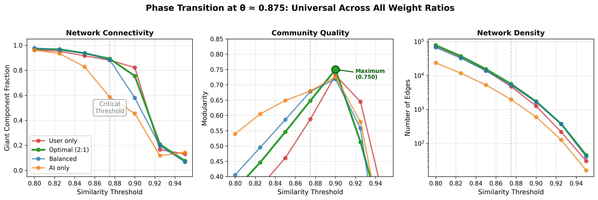
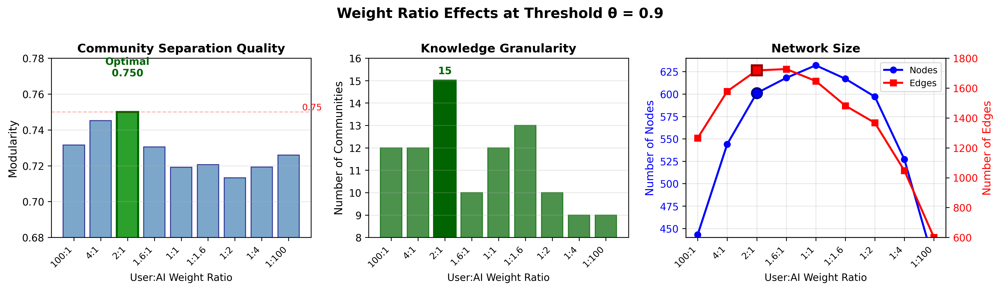
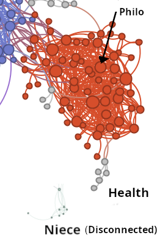
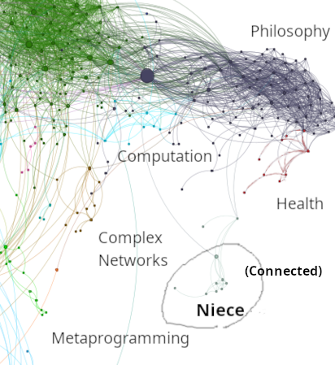
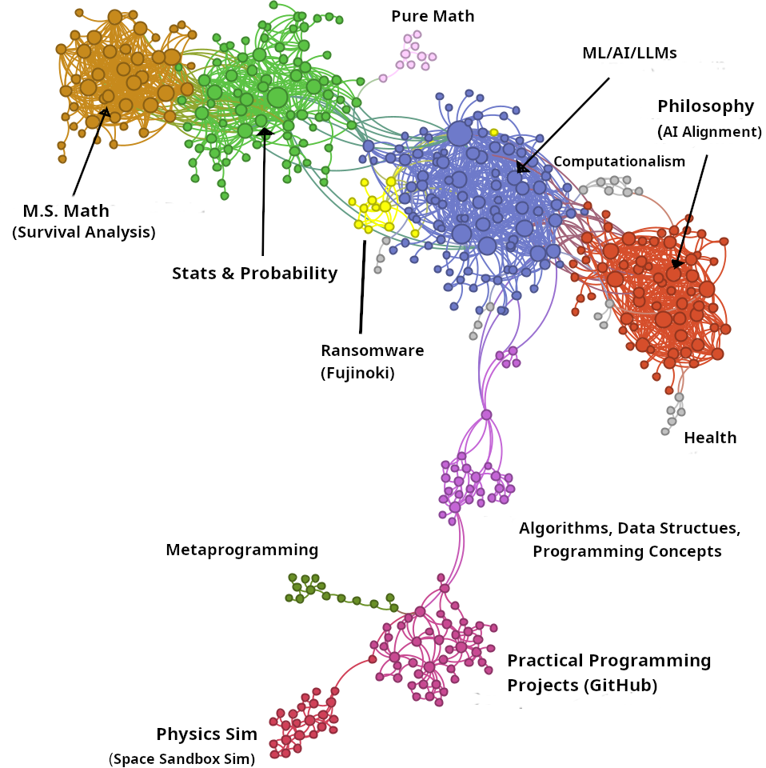
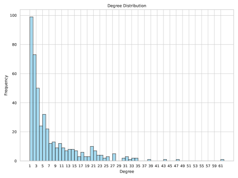
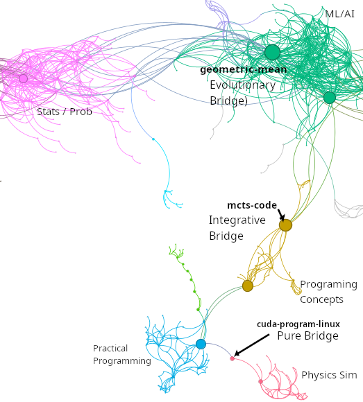

Edwardsville, IL, USA
11email: {atowell, jmatta}@siue.edu
Cognitive MRI of AI Conversations: Analyzing AI Interactions through Semantic Embedding Networks
Abstract
Through a single-user case study of 449 ChatGPT conversations, we introduce a cognitive MRI applying network analysis to reveal thought topology hidden in linear conversation logs. We construct semantic similarity networks with user-weighted embeddings to identify knowledge communities and bridge conversations that enable cross-domain flow. Our analysis reveals heterogeneous topology: theoretical domains exhibit hub-and-spoke structures while practical domains show tree-like hierarchies. We identify three distinct bridge types that facilitate knowledge integration across communities.
keywords:
AI conversation, complex networks, semantic embedding, conversation analysis, knowledge exploration1 Introduction
Linear conversation logs conceal rich cognitive structure. Our cognitive MRI uses network analysis to transform these sequential traces into topological maps. Each conversation becomes a node in a semantic network, revealing how humans navigate knowledge domains through AI dialogue.
We introduce three key concepts: A cognitive MRI reveals latent thought structure in conversational data through network visualization, analogous to medical MRI revealing brain structure. Cognitive structure refers to knowledge organization patterns manifested through conversation—the topology of concepts and domains. Topological maps are graph representations exposing knowledge navigation geometry through nodes (conversations) and edges (semantic similarities).
Our analysis of 449 ChatGPT conversations reveals heterogeneous network topology. Theoretical domains like ML/AI exhibit hub-and-spoke patterns while practical domains like programming show tree-like hierarchical structures. We identify three bridge types: evolutionary bridges emerge through topic drift, integrative bridges deliberately synthesize concepts, and pure bridges form critical links with minimal connections. These patterns reflect knowledge organization in AI-assisted exploration.
We build on distributed cognition [3], which views cognitive processes as distributed across individuals and tools, and transactive memory systems [10], where groups encode, store, and retrieve knowledge collectively. In this framework, human-AI dialogue forms externalized cognitive networks where knowledge emerges through interaction, revealing the non-linear structure of thought independent of temporal sequence.
We address three research questions: (1) How can we extract latent knowledge structure from conversational AI logs? (2) What network properties characterize human-AI knowledge exploration? (3) Can network structure enhance navigation within personal conversation archives? Our contributions include: user-weighted embeddings with a 2:1 ratio prioritizing human input, empirical characterization revealing high modularity (0.750), and a novel taxonomy of bridge conversations with distinct structural signatures. While we analyze one author’s archive, our method provides a template for multi-user studies.
2 Related Work
2.1 Complex Networks in Text and Knowledge Representation
Complex network analysis has been widely applied to textual data, from co-word occurrence networks [1] to citation networks [7]. More recently, researchers have applied network science to semantic relationships, using word embeddings (dense vector representations of words that capture semantic meaning) [4] or document vectors [5] to create similarity-based networks.
2.2 Semantic Embeddings for Document Representation
Dense vector representations of text have revolutionized natural language processing. These embeddings map text to high-dimensional spaces where different dimensions encode various semantic and syntactic features. Word2Vec [5] demonstrated that embeddings capture analogical relationships (e.g., king - man + woman queen). Modern models like nomic-embed-text [13] operate at the sequence level, encoding text sequences into vectors that capture topic, style, and semantic content simultaneously. When aggregated to represent conversations, these embeddings enable multi-faceted similarity comparisons rather than simple topic matches.
2.3 Conversation Analysis in AI Systems
Research on analyzing conversational data with AI systems has primarily focused on dialogue structure [8], user satisfaction [9], or topic modeling [11]. Few studies have examined the network structure of conversations, particularly in the context of knowledge exploration with modern large language models. Our work extends this body of research by introducing a complex network approach to analyzing the semantic structure of AI-assisted conversations.
3 Methods
The code for this analysis is publicly available [12].
3.1 Data Collection and Preparation
Our dataset comprises one user’s ChatGPT conversations spanning December 2022 to April 2025 (1,908 total conversations). All conversations were organic—conducted for actual research, learning, and problem-solving purposes with no knowledge of future network analysis. The dataset reflects natural model evolution: 63% with GPT-3.5/4 (inferred from timeframe, lacking explicit model metadata), 22% GPT-4o, and 15% newer models (o1/o3 series and variants). While this model diversity introduces potential embedding variability, it reflects realistic longitudinal usage patterns.
After filtering by semantic similarity threshold, our network contains 449 conversations at . We exported and preprocessed the conversations from OpenAI’s ChatGPT interface to extract meaningful content while preserving conversational structure. The export process generated individual JSON files for each conversation containing both message content and metadata, establishing the foundation for our embedding generation.
3.2 Embedding Generation
We generated embeddings for each conversation using the nomic-embed-text [13] model (8,192 token context window) to capture semantic content while preserving topical focus despite variations in conversation length. Embeddings were generated from message content only; metadata (titles, timestamps) was excluded to focus purely on semantic relationships. Since users typically drive conversation direction, we weighted user inputs more heavily than AI responses when creating conversation embeddings:
-
1.
Split each conversation into user prompts and AI responses
-
2.
Generated embeddings for individual messages (most within the 8K token limit, avoiding chunking)
-
3.
Calculated separate means: (mean of all user message embeddings) and (mean of all AI message embeddings)
-
4.
Created the final conversation embedding as a weighted combination:
(1)
We weight user inputs more heavily (weight ) to prioritize user intent while still incorporating AI contributions. This reflects our assumption that user prompts better represent the conversation’s semantic focus than AI responses, which tend to be lengthier and more elaborative. The optimal value is determined through comprehensive ablation study (Section 3.3). Unit normalization preserves relative semantic relationships regardless of conversation length.
3.3 Ablation Study
To validate our methodological choices and understand their impact on network structure, we conducted an extensive ablation study examining 63 parameter configurations. This analysis reveals how embedding weights and similarity thresholds jointly determine both quantitative network properties and qualitative knowledge organization.
3.3.1 Experimental Design
We performed a complete 2D parameter sweep examining:
-
•
Nine weight ratios: 100:1, 4:1, 2:1, 1.618:1, 1:1, 1:1.618, 1:2, 1:4, 1:100 (user:AI)
-
•
Seven similarity thresholds: 0.8, 0.825, 0.85, 0.875, 0.9, 0.925, 0.95
For each configuration, we reconstructed the complete network, detected communities using the Louvain method, and analyzed both structural metrics and semantic coherence.

As shown in Figure 1, the phase transition at is remarkably consistent across all weight ratios. Table 1 quantifies these network properties at critical thresholds.
| Threshold | Nodes | Edges | Giant Comp. | Modularity | Communities |
|---|---|---|---|---|---|
| 0.850 | 1,210 | 15,523 | 93.6% | 0.546 | 13 |
| 0.875 | 934 | 5,675 | 89.2% | 0.648 | 15 |
| 0.900 | 449 | 1,615 | 75.4% | 0.750 | 15 |
| 0.925 | 284 | 375 | 20.8% | 0.513 | 5 |

3.3.2 Knowledge Organization Across Weight Ratios
As demonstrated in Figure 2, weight ratios affect modularity optimization, yet our analysis reveals that the underlying topic distribution remains remarkably stable across configurations (ML/AI: 26-37%, General topics: 47-55%). This stability suggests that knowledge domains are inherent to the conversation content rather than imposed by weighting schemes.
The 2:1 user:AI ratio proves optimal precisely because it maximizes modularity (0.750) without distorting this natural topic structure. At this ratio, we observe 15 well-defined communities that preserve topic focus while incorporating semantic breadth from AI responses. User-heavy ratios (100:1, 4:1) create overly fragmented communities that separate related concepts, while AI-heavy ratios (1:4, 1:100) merge distinct domains based on response patterns rather than knowledge structure.
3.3.3 Case Study: Semantic Boundaries at the Phase Transition
Figure 3 illustrates how threshold variation reveals semantic boundaries. At (left), a niece conversation cluster remains isolated from the main network. At (right), this cluster connects through philosophical bridge conversations, illustrating the 2.5% semantic distance between technical and peripheral conversational contexts.


3.3.4 Parameter Selection Justification
Our comprehensive ablation study confirms the optimality of threshold 0.9 with 2:1 user:AI weighting: (1) maximum modularity (0.750) ensures clear community boundaries, (2) post-transition operation removes noise while preserving essential connections (1,615 edges from 100K possible), (3) semantic coherence maintains topic-focused communities, and (4) boundary preservation separates distinct conversational contexts while revealing connection points.
| Metric | Primary Driver | Secondary Effect | Optimal Config |
|---|---|---|---|
| Giant Component | Threshold | None | |
| Modularity | Both | Weight ratio modulates | 2:1 at |
| Clustering | Weight ratio | Threshold modulates | User-heavy ratios |
| Density | Threshold | None | Application-dependent |
| Topic Coherence | Weight ratio | N/A | 2:1 to 4:1 |
As shown in Table 2, the independence of threshold effects (controlling connectivity) from weight ratio effects (controlling organization) suggests these parameters tune orthogonal aspects of network structure. Threshold acts as a semantic filter determining which connections exist, while weight ratio provides semantic perspective determining how knowledge organizes within the connected structure.
3.4 Network Analysis Methods
Based on this comprehensive ablation study, we proceed with detailed analysis of the network at our optimal configuration: with (2:1 user:AI weighting). The following sections examine the structural and semantic properties of this optimized network.
Using this network representation, we applied several standard complex network analysis techniques to characterize its structure. We used the Louvain method [14] for community detection to identify distinct knowledge domains and calculated various centrality measures (degree, betweenness, hub) to identify significant nodes in the network. We also examined core-periphery structure to understand topic stratification.
Betweenness centrality identified bridge conversations that facilitate inter-community knowledge transfer where separate domains integrate (Section 4.3).
4 Network Analysis at Optimal Configuration
4.1 Knowledge Domain Organization
The network reveals rich topological structure, spontaneously organizing into thematic clusters despite no explicit categorization. Figure 4 shows striking heterogeneity: theoretical communities (M.S. Math, Stats & Probability, ML/AI/LLMs, Philosophy) exhibit dense hub-and-spoke structures characteristic of scale-free networks. In contrast, other communities show different organization: Metaprogramming displays tree-like branching, while Practical Programming Projects and Computationalism show more dispersed structures without dominant hubs. Specialized bridge nodes facilitate cross-domain transfer between these communities.

The network comprises 449 nodes and 1615 edges with average degree 7.19, clustering coefficient 0.60, and average path length 5.81. These metrics reveal strong local clustering with relatively long path lengths, indicating “cognitive distance” when navigating between knowledge domains. Such organization likely reflects cognitive constraints on knowledge exploration, where conceptual bridges are necessary to move between specialized domains.
4.2 Degree Distribution and Network Structure
Figure 5 shows the degree histogram for our conversation network. The strongly right-skewed distribution reveals that while the majority of conversations maintain connections with only a few semantically similar conversations, a small number of hub conversations exhibit substantially higher degrees. This pattern markedly contrasts with the bell-shaped distributions typical of random networks, indicating non-random organizational principles.

Comparing our network structure with scale-free networks generated by preferential attachment reveals important differences. As visible in Figure 4, our network exhibits significantly higher clustering and path length than standard scale-free networks. These deviations stem from the network’s cognitive organization. Many communities display elongated, tree-like structures rather than the star-like configurations typical of pure preferential attachment. This is particularly evident in specialized knowledge domains like Programming Projects, where conversations tend to be independent and focused on specific topics rather than forming clusters of related conversations.
This suggests evolution beyond preferential attachment, reflecting cognitive exploration with hub formation limited by specialization and cross-domain constraints. Additionally, the network exhibits core-periphery organization with 25.6% of conversations forming a densely connected core (average degree: 18.94) surrounded by a sparser periphery (average degree: 3.15), indicating stratification between general and specialized topics.
4.3 Community Structure
Louvain detection revealed 15 communities representing thematically coherent domains. Table 3 presents the five largest, where Core % indicates k-core membership [15] and Clustering shows average local coefficients.
| Comm. | Size | Avg. Degree | Core % | Clustering | Primary Topic |
|---|---|---|---|---|---|
| 3 | 103 | 8.60 | 31.1% | 0.465 | ML/AI/LLM (23%) |
| 12 | 82 | 7.09 | 24.4% | 0.405 | Stats & Probability (18%) |
| 7 | 65 | 10.03 | 44.6% | 0.531 | Philosophy & AI Ethics (14%) |
| 14 | 44 | 13.45 | 59.1% | 0.576 | M.S. Math/Analysis (10%) |
| 6 | 45 | 3.78 | 8.9% | 0.396 | Programming Projects (10%) |
Communities correspond to distinct knowledge domains: Community 3 (ML/AI/
LLM) covers AI architectures and training; Community 12 (Stats & Probability) encompasses statistical inference and modeling; Community 7 (Philosophy & AI Ethics) addresses consciousness and AI alignment; Community 14 (M.S. Math/Analysis) contains graduate-level mathematical analysis; Community 6 (Programming Projects) focuses on practical implementation.
The variation in internal structure (average degree, clustering, and core percentage) suggests different conversation patterns across domains. For example, Community 14 shows characteristics of a specialized knowledge domain with dense expert connections, while Community 6 resembles a more practical, service-oriented domain with mostly peripheral connections.
4.4 Bridges and Hubs: Dual Roles in Knowledge Integration
Analysis of centrality measures reveals conversations serving dual roles as bridges (high betweenness) and hubs (high degree). Table 4 presents the top conversations ranked by betweenness centrality.
| Conversation | Betweenness | Degree |
|---|---|---|
| geometric-mean-calculation | 45467.51 | 61 |
| mcts-code-analysis-suggestions | 36909.13 | 10 |
| loss-in-llm-training | 35118.59 | 30 |
| algotree-generate-unit-tests-flattree | 31869.77 | 13 |
| compile-cuda-program-linux | 9775.00 | 2 |
Three distinct bridge types emerge, extending structural bridge classifications [16, 17] with semantic characterization. First, evolutionary bridges are high-degree nodes that expand across domains through topic drift. For example, geometric-mean-calculation evolved from geometric means into probability theory, neural networks, and tokenization (degree=61, betweenness=45467). Second, integrative bridges are moderate-degree nodes that deliberately synthesize domains, such as mcts-code-analysis-suggestions which integrates AI theory with software engineering (degree=10, betweenness=36909). Third, pure bridges are low-degree critical links like compile-cuda-program-linux (degree=2, betweenness=9775). Figure 6 illustrates these distinct bridging mechanisms in the network structure.

Notably, some conversations like geometric-mean-calculation function as both bridges and hubs, while others like mle-bootstrapping-simulation (degree=47) serve primarily as within-community hubs. Hub nodes exhibit lower clustering coefficients (0.224 versus 0.436 average), creating radial structures that position them as conceptual distribution points. The concentration of hubs in Community 3 (ML/AI/LLM) suggests this domain serves as a conceptual anchor, contrasting with the distributed organization in practical domains like Programming Projects. These patterns reveal how conversation networks follow unique evolutionary dynamics.
5 Discussion and Conclusion
5.1 Cognitive Interpretation
The network reveals cognitive patterns distinct from academic citation networks, which provide a natural comparison as both capture knowledge exploration processes. While citation networks evolve through preferential attachment with papers citing influential work (creating major hubs like foundational papers with thousands of citations), conversation networks reflect real-time knowledge exploration. Our finding of heterogeneous topology with some tree-like, branching clusters entirely lacking hubs contrasts sharply with citation networks’ consistent scale-free structure. In citation networks, even specialized subfields connect to seminal papers, but our conversational communities like Metaprogramming show purely branching exploration without central authorities. This suggests cognitive exploration follows different organizing principles: intense local exploration punctuated by cross-topic jumps rather than cumulative authority building. This constitutes a structural trace of thinking. Just as MRI reveals the physical structure of the brain, this cognitive MRI reveals the topological structure of thought preserved in conversation logs. Three community types emerge: Expert domains such as Stats/Probability are densely connected with high clustering. Bridging domains like ML/AI/LLM are broadly connected with lower clustering. Task domains such as Programming are sparsely connected and implementation-focused. This suggests design implications: surfacing pure bridges could facilitate creative leaps, while respecting natural knowledge boundaries could improve retrieval systems.
5.2 Limitations and Future Work
Our single-user study limits generalizability; future work should analyze diverse users to understand how cognitive styles influence exploration patterns. The static snapshot could be extended using temporal metadata to reveal how knowledge domains evolve through continued AI interaction. Additionally, the optimal 2:1 user:AI weighting ratio likely depends on individual cognitive styles, conversation patterns, and the specific AI model used (GPT-3.5/4 in our case); multi-user studies would be needed to establish whether this ratio generalizes.
5.3 Conclusion
Through a single-user case study, we presented a novel application of complex network analysis to AI conversations, revealing distinct knowledge communities and bridge conversations. Our comprehensive ablation study established that a 2:1 user:AI weighting ratio () optimally balances user intent with AI semantic contributions for this dataset, achieving maximum modularity (0.750) at similarity threshold . The heterogeneous network topology reflects patterns in AI-assisted topic exploration, with bridges facilitating movement between specialized domains. This cognitive MRI methodology provides a framework for understanding and enhancing AI-assisted knowledge work as these systems become increasingly integrated into human cognition.
References
- [1] M. Callon, J.-P. Courtial, W. A. Turner, and S. Bauin, ”From translations to problematic networks: An introduction to co-word analysis,” Social Science Information, vol. 22, no. 2, pp. 191-235, 1983.
- [2] J. Devlin, M.-W. Chang, K. Lee, and K. Toutanova, ”BERT: Pre-training of deep bidirectional transformers for language understanding,” in Proc. NAACL-HLT, 2019.
- [3] E. Hutchins, Cognition in the Wild. Cambridge, MA: MIT Press, 1995.
- [4] O. Levy and Y. Goldberg, ”Neural word embedding as implicit matrix factorization,” in Advances in Neural Information Processing Systems, 2014.
- [5] T. Mikolov, I. Sutskever, K. Chen, G. S. Corrado, and J. Dean, ”Distributed representations of words and phrases and their compositionality,” in Advances in Neural Information Processing Systems, 2013.
- [6] J. Pennington, R. Socher, and C. D. Manning, ”GloVe: Global vectors for word representation,” in Proc. EMNLP, 2014.
- [7] D. J. de S. Price, ”Networks of scientific papers,” Science, vol. 149, no. 3683, pp. 510-515, 1965.
- [8] I. V. Serban, R. Lowe, P. Henderson, L. Charlin, and J. Pineau, ”A survey of available corpora for building data-driven dialogue systems,” arXiv preprint arXiv:1512.05742, 2016.
- [9] A. Venkatesh et al., ”On evaluating and comparing conversational agents,” arXiv preprint arXiv:1801.03625, 2018.
- [10] D. M. Wegner, ”Transactive memory: A contemporary analysis of the group mind,” in Theories of Group Behavior, pp. 185-208, Springer, 1987.
- [11] Z. Zeng, H. Deng, X. Guo, and H. Wang, ”Topic modeling for short texts with insider and outsider word separation,” in Proc. IEEE Int. Conf. on Big Data, 2019.
- [12] A. Towell, ”chatgpt-complex-net: Complex network analysis of ChatGPT conversations,” 2025. [Online]. Available: https://github.com/queelius/chatgpt-complex-net. DOI: https://doi.org/10.5281/zenodo.15314235
- [13] Z. Nussbaum, J. X. Morris, B. Duderstadt, and A. Mulyar, ”Nomic Embed: Training a Reproducible Long Context Text Embedder,” arXiv preprint arXiv:2402.01613, 2025.
- [14] V. D. Blondel, J.-L. Guillaume, R. Lambiotte, and E. Lefebvre, ”Fast unfolding of communities in large networks,” Journal of Statistical Mechanics: Theory and Experiment, vol. 2008, no. 10, p. P10008, 2008.
- [15] S. B. Seidman, ”Network structure and minimum degree,” Social Networks, vol. 5, no. 3, pp. 269-287, 1983.
- [16] M. S. Granovetter, ”The strength of weak ties,” American Journal of Sociology, vol. 78, no. 6, pp. 1360-1380, 1973.
- [17] R. S. Burt, Structural Holes: The Social Structure of Competition. Cambridge, MA: Harvard University Press, 1992.